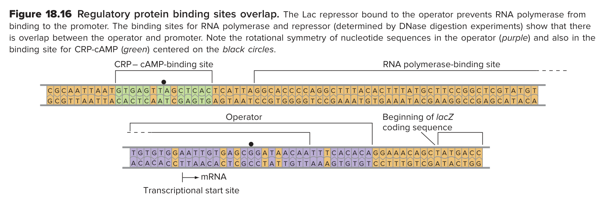
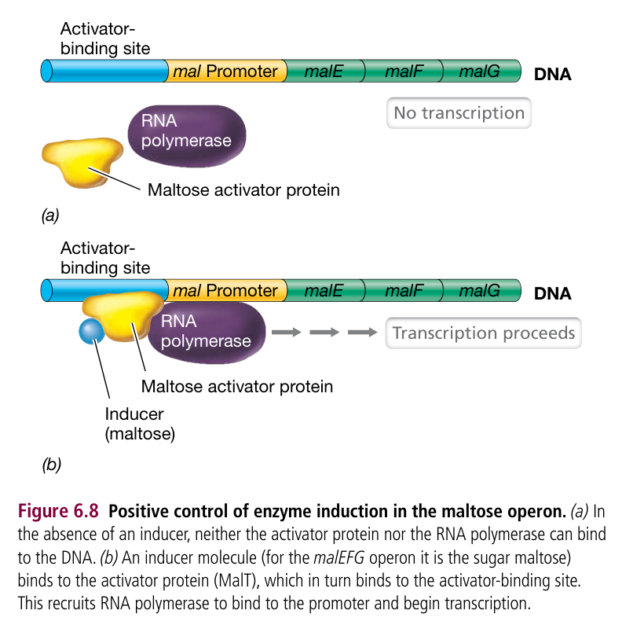
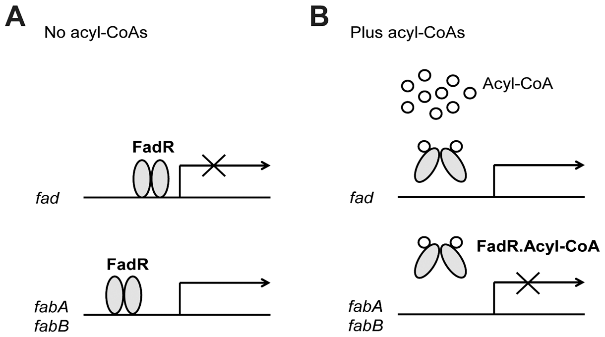
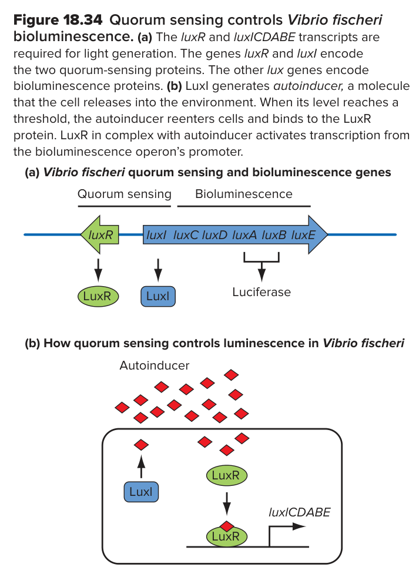
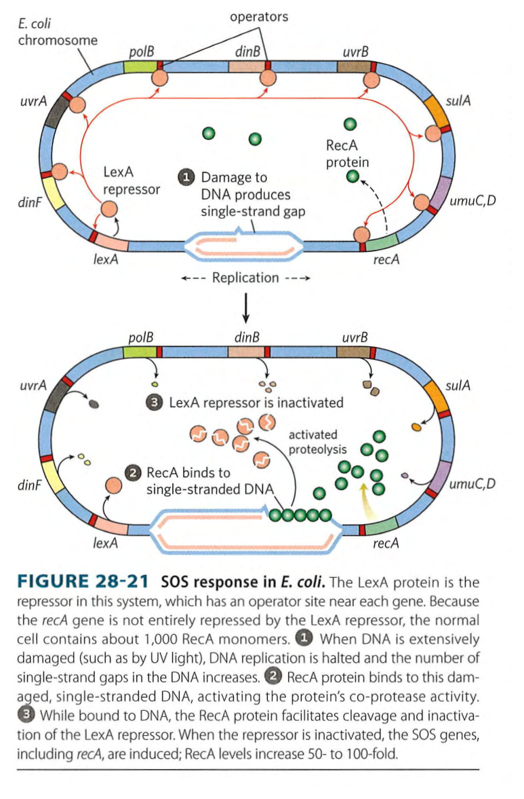

原核操縱組進階三問：CAP 會結合在操作子嗎？FadR 算可抑制型正調控嗎？誘導物／輔抑制物一定是受質／產物嗎？
延續 2 × 2 原核基因調控矩陣，一次釐清高中課堂與教甄備課最常追問的三個關鍵邊界：活化蛋白結合位與操作子的差別、真實原核世界的「可抑制型正調控」經典案例 FadR，以及為何「受質誘導／產物抑制」只是常見趨勢而非定義上限。
- 問題一（CAP 會結合在操作子嗎？）：不會！在 lac 操縱組中，操作子專供 LacI 抑制蛋白結合；CAP（CRP）結合在啟動子上游專屬的 CAP 結合位（活化蛋白結合位），用來接觸 RNA 聚合酶 α 次單元並協助招募。
- 問題二（FadR 算可抑制型正調控嗎？）：是的！大腸桿菌 FadR 剛合成即具活性，平常結合在脂肪酸合成基因（fabA、fabB、fabHDG）啟動子 −40 處主動活化轉錄；當長鏈醯基輔酶 A 結合後使 FadR 脫離 DNA、關閉合成，是真實原核界公認的可抑制型正調控經典實例。
- 問題三（誘導物一定是受質、輔抑制物一定是產物嗎？）：都不一定！「受質誘導、產物抑制」是代謝操縱組的常見趨勢，但誘導物可以是異構物（異乳糖）、無法代謝的類似物（IPTG）、純訊號分子（cAMP、自誘導物 AHL）或 DNA 損傷訊號（SOS）；輔抑制物也可以是無機金屬離子（Fe²⁺）、下游衍生物（SAM）或游離嘌呤鹼基。
01 問題一：CAP（CRP）會結合在操作子上嗎？
不會。把大腸桿菌 lac 操縱組由上游（5′）到下游（3′）攤開，各調控元件的排列順序非常清楚：
lacI（獨立調節基因） → CAP 結合位（啟動子上游，長約 22 bp） → lac 啟動子（RNA 聚合酶結合處） → lac 主操作子 O₁（啟動子下游端、重疊轉錄起始點 +1） → 結構基因 lacZ、lacY、lacA
- 主／輔操作子都是抑制蛋白的專屬位置：分子生物學（Weaver 5e Ch. 7）顯示 lac 其實有 3 個操作子（主操作子 O₁ 在 +11，輔助操作子 O₃ 在 −82、O₂ 在 +412），供 LacI 四聚體將 DNA 拉成環以強化抑制；三者全都是 LacI 抑制蛋白的結合處，不是 CAP 的結合位。
- 空間功能決定位置：操作子 O₁ 卡在啟動子尾端與轉錄起始點上，適合抑制蛋白擋住 RNA 聚合酶；CAP–cAMP 則需要站在啟動子上游側，使 DNA 彎曲並直接接觸 RNA 聚合酶的 α 次單元，讓轉錄起始效率提高約 50 倍。
- 課本細微用語差異（為何偶有混淆）：部分課本（Freeman 8e、Raven 13e、Brooker 8e Ch. 14、Becker 10e、Weaver 5e）稱其為「啟動子上游的 CAP 結合位」，部分課本（Campbell 13e、Pierce 7e、Klug 12e）畫在「啟動子最上游端」；此外，Brooker 8e 在 Ch. 12 對比真核強化子時曾順帶廣義統稱細菌調控位為操作子，但在 Ch. 14 講 lac 實例時仍把 CAP 位與操作子（lacO）明確分開。微生物學正典 Brock 15e Ch. 6 與遺傳學正典 Pierce 7e Ch. 16 則直接明言：操作子是抑制蛋白結合位，活化蛋白通常結合在操作子以外的活化蛋白結合位。

🔍 點擊放大檢視原圖
🔍 點擊放大檢視原圖高中 7 版教材對照（選修生物Ⅰ基因表現調控章節）
| 版本 | 是否提及 CAP 與正調控 | 差異或可能誤讀分析 | 查找狀態（本機副本） |
|---|---|---|---|
| 三民（113 新版） | 未提及 CAP，僅教負調控 | 明確定義操作子為「抑制蛋白辨識並結合的一段 DNA 序列」。 | 選生Ⅰ 課本／手冊 Ch. 4（已核讀） |
| 全華（2023 課本／舊手冊） | 未提及 CAP，僅教負調控 | 操作子明定為抑制蛋白結合位置。 | 選生Ⅰ 課本／備課用書 Ch. 5（已核讀） |
| 南一（108） | 無法確認 | — | 選生Ⅰ Ch. 2 PDF 字型加密亂碼，尚未 OCR 核讀 |
| 康熹（103 課綱） | 未提及 CAP，僅教負調控 | 屬較舊課綱，僅介紹乳糖操縱組負調控。 | 選修生物(下) Ch. 11（已核讀） |
| 泰宇（115 新版） | 未提及 CAP，僅教 lac／trp 負調控 | 操作子明定為抑制蛋白附著序列。 | 選生Ⅰ 115 課本／授課指引 Ch. 3（已核讀） |
| 翰林（113 選一手冊） | 7 版中唯一在教師手冊補充 CAP 正調控（PDF p.46–47，非課本主文） | ⚠️ 最易引起誤解處：p.46 總論先將操縱組調控全歸在「調節蛋白與操作子的互動」下，p.47 又只寫「唯有 CAP 先與 RNA 聚合酶接合」而省略 DNA 上 CAP 結合位，容易讓師生誤以為 CAP 結合在操作子或不結合 DNA。 | 翰林 113 選一手冊 Ch. 4 p.46–47（已核讀） |
| 龍騰（108 課本與手冊） | 未提及 CAP，僅教負調控 | 操作子位於啟動子與結構基因之間，為抑制蛋白結合位置。 | 選生Ⅰ 課本／手冊 Ch. 4（已核讀） |
02 問題二：FadR 活化蛋白算「可抑制型正調控」嗎？
是的！我們在 原核基因調控分類 盤點全部 12 套已翻譯普生與遺傳學課本時發現，第 4 象限「可抑制型正調控（positive repressible control）」在基礎教科書中只有理論圖解（Brooker 8e 圖 14.2d）與假設題；而一線微生物分子生物學中，大腸桿菌 FadR 對不飽和脂肪酸合成基因（fabA、fabB 與 fabHDG 操縱組）的調控，正是這個象限貨真價實的經典代表！
| 判斷軸線 | FadR 對 fabA／fabB／fabHDG 的實際行為 | 歸類結論 |
|---|---|---|
| 正調控 vs. 負調控 | FadR 結合在 fabA、fabB 啟動子上游側（約 −40 處），直接協助招募 RNA 聚合酶並大幅提高轉錄。把 fadR 基因敲除後，fabA／fabB 表現量大幅下降。 | 正調控 （FadR 是活化蛋白） |
| 可誘導 vs. 可抑制 | 環境缺乏外來長鏈脂肪酸時，剛合成的 FadR 本身即具活性並結合 DNA，讓合成基因預設開啟；當外來長鏈脂肪酸充足、在細胞內轉化為長鏈醯基輔酶 A（long-chain acyl-CoA）後，該分子作為小分子抑制物（inhibitor）結合 FadR 引發構形改變，使 FadR 從 DNA 脫離，失去活化而關閉轉錄。 | 可抑制型 （預設開啟 → 效應物來後關閉） |
同一顆 FadR 蛋白感測同一個訊號分子（長鏈醯基輔酶 A），卻同時管理兩套相反路徑：
• 脂肪酸分解（β-氧化，fadL、fadD、fadBA 等 fad 調節組）：FadR 擔任抑制蛋白 → 可誘導型負調控（外來脂肪酸多 → 長鏈醯基輔酶 A 讓 FadR 脫離操作子 → 打開分解）。
• 不飽和脂肪酸合成（fabA、fabB、fabHDG）：FadR 擔任活化蛋白 → 可抑制型正調控（外來脂肪酸多 → 長鏈醯基輔酶 A 讓 FadR 脫離啟動子 −40 處 → 關閉合成）。
只要單一訊號讓 FadR 同時從兩邊 DNA 鬆手，細菌就一鍵完成「關掉合成、打開分解」的代謝切換。

🔍 點擊放大檢視原圖 🔍 點擊放大檢視原圖
🔍 點擊放大檢視原圖
fabA 與 fabB 各自是獨立轉錄的單基因，合屬 FadR 調節組（regulon），而非排成單一多基因操縱組。若要舉嚴格意義上的多基因操縱組，My 等人（2013）已證實大腸桿菌脂肪酸合成操縱組 fabHDG 同樣由 FadR 直接正向活化並在長鏈醯基輔酶 A 存在時關閉。
FadR 主要一線文獻依據（外部 PubMed 已核對，本機 Vault 查無）
- Henry MF, Cronan JE Jr. (1991), J. Mol. Biol. — 首次指出 FadR 同時活化脂肪酸合成並抑制分解（PMID 1722255）。
- Henry MF, Cronan JE Jr. (1992), Cell — A new mechanism of transcriptional regulation: release of an activator triggered by small molecule binding，確立 FadR 結合 fabA 啟動子 −40 位點並受長鏈醯基輔酶 A 釋放（PMID 1505031）。
- Campbell JW, Cronan JE Jr. (2001), J. Bacteriol. — 證實 FadR 直接正向調控 fabB（PMID 11566998）。
- van Aalten DMF, DiRusso CC, Knudsen J. (2001), EMBO J. — 解析 FadR–DNA 與 FadR–myristoyl-CoA 晶體結構，揭露別構釋放機制（PMID 11296236）。
- My L et al. (2013), J. Bacteriol. — 證實 fabHDG 操縱組由 FadR 直接活化（PMID 23772072）。
- Feng Y, Cronan JE Jr. (2012), PLoS ONE 7(9): e46275 — 圖三雙重調控示意圖來源，CC BY 4.0（PMC3460868）。
03 問題三：誘導物一定是受質嗎？輔抑制物一定是產物嗎？
兩個都不一定！「受質誘導、產物抑制」是分解代謝與合成代謝操縱組的常見演化趨勢（Brooker 8e Ch. 14），但並非誘導物與輔抑制物的必要條件。Brock 微生物學 15e Ch. 6 明確提醒：「並非所有誘導物與輔抑制物都是相關酵素真正的受質或最終產物。」
A. 可誘導型調控：非（原始）受質誘導的 4 種情況
| 例外類型 | 代表實例 | 為什麼不是（原始）受質？ | 來源歸屬 |
|---|---|---|---|
| 1. 受質的異構物或活化衍生物 | • lac 操縱組：異乳糖（allolactose） • fad 調節組：長鏈醯基輔酶 A |
乳糖才是 β-半乳糖苷酶受質，但真正結合 LacI 的是副反應轉成的異構物異乳糖；fad 系統亦須先將脂肪酸活化成醯基輔酶 A 才觸發 FadR 脫離。 | Vault（Brock 15e、Brooker 8e、Stryer 10e）；FadR 為外部文獻 |
| 2. 結構類似物（不可代謝誘導物） | IPTG（異丙基硫代半乳糖苷） | 實驗室常用於強效誘導 lac 操縱組，但 β-半乳糖苷酶完全無法水解它（不是受質）。 | Vault（Lehninger 8e、Brock 15e） |
| 3. 純訊號分子 | • cAMP（活化 CAP，Brooker 8e 稱其為誘導物） • 自誘導物 AHL（費氏弧菌群體感應，活化 LuxR 開啟 luxICDABE 發光） |
cAMP 反映低葡萄糖、AHL 反映細菌族群密度，兩者都不是下游酵素（乳糖分解酶或螢光素酶）的分解受質。 | Vault（Brooker 8e、Goldberg 7e、Brock 15e） |
| 4. 壓力訊號誘導（無小分子受質） | 大腸桿菌 SOS 調節組（RecA–LexA） | 嚴重 DNA 損傷產生的單股 DNA 缺口活化 RecA，促使 LexA 抑制蛋白自催化切割，一口氣誘導近 60 個 DNA 修復基因。 | Vault（Lehninger 8e） |

🔍 點擊放大檢視原圖
🔍 點擊放大檢視原圖B. 可抑制型調控：非該路徑「合成產物」擔任輔抑制物的 3 種情況
| 例外類型 | 代表實例 | 為什麼不是該路徑合成的「產物」？ | 來源歸屬 |
|---|---|---|---|
| 1. 環境輸入的無機金屬離子 | • 大腸桿菌 Fur：Fe²⁺ 關閉鐵吸收與鐵載體基因 • 白喉棒狀桿菌 DtxR：Fe²⁺ 抑制白喉毒素基因（tox）與鐵吸收基因 |
Fe²⁺ 是從環境攝取的無機離子，並非酵素合成的代謝產物；白喉毒素更與鐵合成無關。 | 外部 PubMed 文獻（Vault 查無原核 Fur／DtxR）：PMID 8444893、PMID 41745905 |
| 2. 下游活化衍生物或游離鹼基指標 | • 大腸桿菌 MetJ（met 調節組）：輔抑制物為 S-腺苷甲硫胺酸（SAM）（非甲硫胺酸本身） • 大腸桿菌 PurR（pur 嘌呤從頭合成）：輔抑制物為鳥糞嘌呤或次黃嘌呤 |
細胞改用更能反映代謝庫存的下游活化態衍生物（SAM）或游離鹼基作為關機訊號，而非直接感測途徑終產物。 | 外部 PubMed 文獻（Vault 查無）：PMID 20196619、PMID 9278422 |
| 3. 結構類似物 | 與終產物結構相似的外來或人工化合物 | 只要能結合抑制蛋白並誘發構形改變即可關閉轉錄，未必由該路徑合成。 | Vault（Brock 15e Ch. 6） |
1. 輔抑制物（corepressor）vs. 抑制物（inhibitor）：在原核 2 × 2 嚴格分類（Brooker 8e Ch. 14）中，「輔抑制物」專指結合抑制蛋白使其結合 DNA 的小分子（負抑制，如色胺酸）；結合活化蛋白使其脫離 DNA 的小分子（正抑制，如 FadR 的長鏈醯基輔酶 A）稱為抑制物（inhibitor）。
2. 真核細胞的 corepressor：在真核基因調控中，corepressor（如 NCoR、SMRT、Sin3）是指被抑制因子招募來去乙醯化組蛋白的大型蛋白質複合體，完全不是小分子代謝產物。
04 代表性原文正典中英原句對照
以下精選本機譯本庫中針對「活化蛋白結合位 vs. 操作子」與「誘導物／輔抑制物不限受質／產物」的原文關鍵段落。
"When the genes in an operon code proteins that function in the catabolism, or breakdown, of a substance, they are usually regulated in an inducible manner. The substance to be broken down or a related compound often acts as the inducer."
當操縱組編碼分解代謝蛋白質時，通常以可誘導方式調控，被分解的物質或相關化合物往往作為誘導物。
"Later molecular biological work, which we will discuss shortly, has shown that the CAP–cAMP binding site (the activator-binding site) lies just upstream of the promoter."
後來的分子生物學研究顯示，CAP–cAMP 結合位（即活化位）就位於啟動子的上游。
"The RecA protein provides the functional link between the biological signal (DNA damage) and induction of the SOS genes. Heavy DNA damage leads to numerous single-strand gaps in the DNA, and only RecA that is bound to single-stranded DNA can facilitate cleavage of the LexA repressor..."
嚴重 DNA 損傷會在 DNA 產生許多單股缺口，只有結合單股 DNA 的 RecA 才能促進 LexA 抑制蛋白切割並誘導 SOS 反應。
05 高中課堂怎麼說、延伸閱讀與查證邊界
談 CAP 位置：「在 lac 操縱組上，操作子位在啟動子後面，專門給抑制蛋白（LacI）結合來擋路；低葡萄糖時協助加速轉錄的 CAP–cAMP 是活化蛋白，結合在啟動子前面（上游）專屬的 CAP 結合位，幫忙把 RNA 聚合酶拉穩。」
談受質誘導／產物抑制：「高中用乳糖（受質誘導）和色胺酸（產物抑制）幫助大家抓到細胞節能邏輯，但這只是最常見的趨勢；誘導物與輔抑制物的本質是訊號效應物，現實中也可以是異構物、通訊分子、金屬離子或 DNA 損傷訊號。」
延伸閱讀（本站操縱組系列專題）
- 回到完整 2 × 2 矩陣與 13 套課本總盤點（含課堂教學投影片）：原核細胞的基因表現調控分類：正／負調控 vs. 持續型／可誘導型／可抑制型。
- 釐清操作子會不會被轉錄或轉譯：操作子會不會被轉錄與轉譯？（基因 vs. 子）。
- 看 trp 操縱組為何「共同抑制物」不是去抑制「抑制蛋白」：色胺酸操縱組的抑制蛋白為何平時無活性？。
- 看大腸桿菌如何同時偵測葡萄糖與乳糖：大腸桿菌如何感測葡萄糖與乳糖？。
本機 Vault 查有：CAP 結合位≠操作子、IPTG 非受質誘導物、異乳糖異構物誘導、群體感應自誘導物 AHL、SOS 損傷訊號誘導，皆已由 400_Knowledge/_原文書翻譯/ 多部正典逐字核對；高中 7 版備課用書均已逐一查找本機副本（其中南一 108 選生Ⅰ Ch. 2 PDF 因字型加密無法純文字抽取，尚未 OCR 核讀）。
外部一線文獻補充（本機 Vault 查無）：大腸桿菌 FadR（fabA、fabB、fabHDG 可抑制型正調控）與非產物輔抑制物實例（Fur／Fe²⁺、DtxR／Fe²⁺、MetJ／SAM、PurR／鳥糞嘌呤或次黃嘌呤）均於全 Vault 檢索為 0 筆，係依 PubMed 同儕審查原始論文補充並標明 PMID 連結。